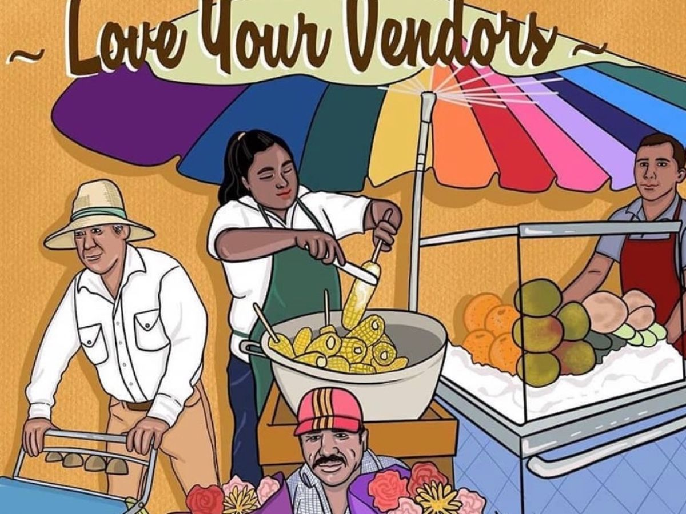

Best Street Food In LA
A crowdsourced list of Los Angeles' best street food! Click on the map circles to learn more about each location. What's your favorite spot?
Let us know by filling out this quick survey